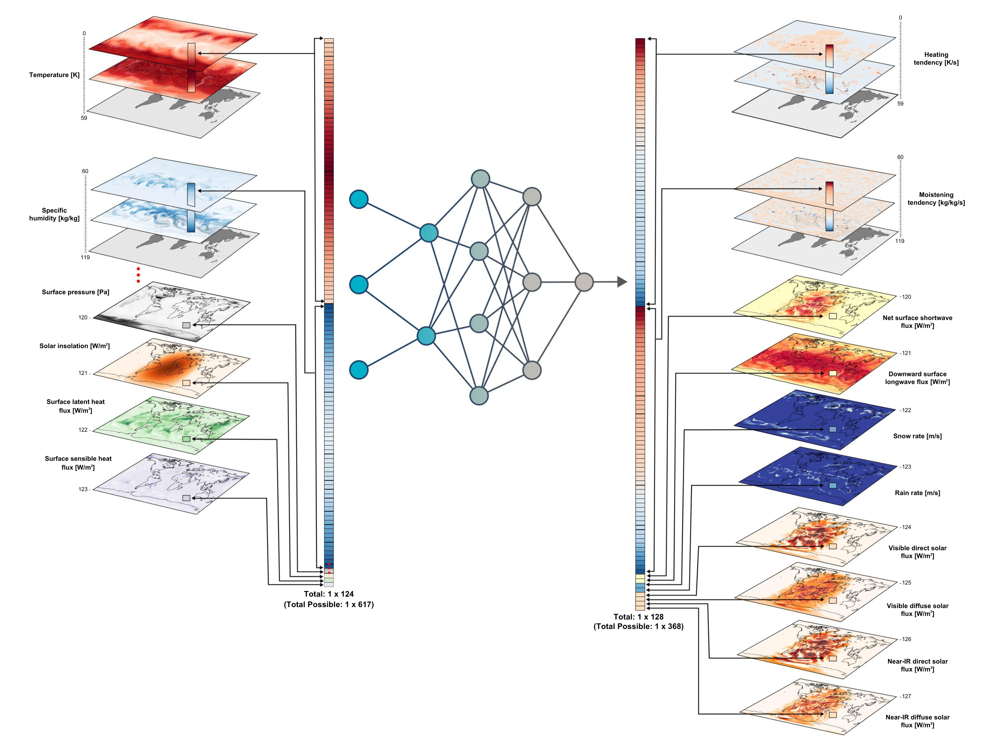

ClimSim#
ClimSim: An open large-scale dataset for training high-resolution physics emulators in hybrid multi-scale climate simulators#
This repository contains the code necessary to download and preprocess the data, and create, train, and evaluate the baseline models in the paper.

Dataset Information#
Data from multi-scale climate model (E3SM-MMF) simulations were saved at 20 minute intervals for 10 simulated years. Two netCDF files (input and output) are produced at each timestep, totaling 525,600 files for each configuration. 3 configurations of E3SM-MMF were run:
High-Resolution Real Geography
1.5° x 1.5° horizontal resolution (21,600 grid columns)
5.7 billion total samples (41.2 TB)
102 MB per input file, 61 MB per output file
Low-Resolution Real Geography
11.5° x 11.5° horizontal resolution (384 grid columns)
100 million total samples (744 GB)
1.9 MB per input file, 1.1 MB per output file
Low-Resolution Aquaplanet
11.5° x 11.5° horizontal resolution (384 grid columns)
100 million total samples (744 GB)
1.9 MB per input file, 1.1 MB per output file
2D variables vary in horizontal space (“ncol”), and 3D variables vary additionally in vertical space (“lev”). The full list of variables can be found here. The subset of variables used in the experiments is shown below:
Input |
Target |
Variable |
Description |
Units |
Dimensions |
|---|---|---|---|---|---|
X |
T |
Air temperature |
K |
(lev, ncol) |
|
X |
q |
Specific humidity |
kg/kg |
(lev, ncol) |
|
X |
pₛ |
Surface pressure |
Pa |
(ncol) |
|
X |
SOLIN |
Solar insolation |
W/m² |
(ncol) |
|
X |
LHFLX |
Surface latent heat flux |
W/m² |
(ncol) |
|
X |
SHFLX |
Surface sensible heat flux |
W/m² |
(ncol) |
|
X |
dT/dt |
Heating tendency |
K/s |
(lev, ncol) |
|
X |
dq/dt |
Moistening tendency |
kg/kg/s |
(lev, ncol) |
|
X |
NETSW |
Net surface shortwave flux |
W/m² |
(ncol) |
|
X |
FLWDS |
Downward surface longwave flux |
W/m² |
(ncol) |
|
X |
PRECSC |
Snow rate |
m/s |
(ncol) |
|
X |
PRECC |
Rain rate |
m/s |
(ncol) |
|
X |
SOLS |
Visible direct solar flux |
W/m² |
(ncol) |
|
X |
SOLL |
Near-IR direct solar flux |
W/m² |
(ncol) |
|
X |
SOLSD |
Visible diffuse solar flux |
W/m² |
(ncol) |
|
X |
SOLLD |
Near-IR diffuse solar flux |
W/m² |
(ncol) |
Download the Data#
The input (“mli”) and output (“mlo”) data for all E3SM-MMF configurations can be downloaded from Hugging Face:
Preprocess the Data#
The preprocessing workflow takes the 2D and 3D input and output data from the climate model simulations, and creates normalized, multi-variate input and output vectors for each sample (a single “collapsed” dimension of space and time).
The files containing the normalization factors for the input and output data are found in the norm_factors/ folder. The file containing the E3SM-MMF grid information is found in the grid_info/ folder.
The requirements needed for preprocessing are found in the /preprocessing/env/requirements.txt file. The training dataset, validation dataset, and scoring datasets are created using the preprocessing/create_npy_data_splits.ipynb script.
Baseline Models#
Five different baseline models were created and trained:
Convolutional neural network (CNN)
Heteroskedastic regression (HSR)
Multi-layer perceptron (MLP)
Randomized prior network (RPN)
Conditional variational autoencoder (cVAE)
Jupyter Notebooks describing how to load and train simple CNN and MLP models are found in the demo_notebooks/ folder. The environments and code used to train each model, as well as the pre-trained models, are found in the baseline_models/ folder.
Evaluation#
Four different evaluation metrics were calculated:
Mean absolute error (MAE)
R-squared (R²)
Root mean squared error (RMSE)
Continuous ranked probability score (CRPS)
Evaluation and comparison of the different baseline models are found in the metrics_and_figures/ folder. All variables are converted to a common energy unit (i.e., W/m²) for scoring. The scoring is done using the functions in metrics_and_figures/data_utils.py.
Evaluation metrics are computed separately for each horizontally-averaged, vertically-averaged, and time-averaged target variable. The performance for each baseline model for all four metrics is shown below:
MAE (W/m²) |
CNN |
HSR |
MLP |
RPN |
cVAE |
|---|---|---|---|---|---|
dT/dt |
2.585 |
2.845 |
2.683 |
2.685 |
2.732 |
dq/dt |
4.401 |
4.784 |
4.495 |
4.592 |
4.680 |
NETSW |
18.85 |
19.82 |
13.36 |
18.88 |
19.73 |
FLWDS |
8.598 |
6.267 |
5.224 |
6.018 |
6.588 |
PRECSC 3.364 |
3.511 |
2.684 |
3.328 |
3.322 |
|
PRECC |
37.83 |
42.38 |
34.33 |
37.46 |
38.81 |
SOLS |
10.83 |
11.31 |
7.97 |
10.36 |
10.94 |
SOLL |
13.15 |
13.60 |
10.30 |
12.96 |
13.46 |
SOLSD |
5.817 |
6.331 |
4.533 |
5.846 |
6.159 |
SOLLD |
5.679 |
6.215 |
4.806 |
5.702 |
6.066 |
R² |
CNN |
HSR |
MLP |
RPN |
cVAE |
|---|---|---|---|---|---|
dT/dt |
0.627 |
0.568 |
0.589 |
0.617 |
0.590 |
dq/dt |
– |
– |
– |
– |
– |
NETSW |
0.944 |
0.959 |
0.983 |
0.968 |
0.957 |
FLWDS |
0.828 |
0.904 |
0.924 |
0.912 |
0.883 |
PRECSC |
– |
– |
– |
– |
– |
PRECC |
0.077 |
-68.35 |
-38.69 |
-67.94 |
-0.926 |
SOLS |
0.927 |
0.929 |
0.961 |
0.943 |
0.929 |
SOLL |
0.916 |
0.916 |
0.948 |
0.928 |
0.915 |
SOLSD |
0.927 |
0.923 |
0.956 |
0.940 |
0.921 |
SOLLD |
0.813 |
0.797 |
0.866 |
0.837 |
0.796 |
RMSE (W/m²) |
CNN |
HSR |
MLP |
RPN |
cVAE |
|---|---|---|---|---|---|
dT/dt |
4.369 |
4.825 |
4.421 |
4.482 |
4.721 |
dq/dt |
7.284 |
7.896 |
7.322 |
7.518 |
7.780 |
NETSW |
36.91 |
37.77 |
26.71 |
33.60 |
38.36 |
FLWDS |
10.86 |
8.220 |
6.969 |
7.914 |
8.530 |
PRECSC |
6.001 |
6.095 |
4.734 |
5.511 |
6.182 |
PRECC |
85.31 |
90.64 |
72.88 |
76.58 |
88.71 |
SOLS |
22.92 |
23.61 |
17.40 |
20.61 |
23.27 |
SOLL |
27.25 |
27.78 |
21.95 |
25.22 |
27.81 |
SOLSD |
12.13 |
12.40 |
9.420 |
11.00 |
12.64 |
SOLLD |
12.10 |
12.47 |
10.12 |
11.25 |
12.63 |
CRPS (W/m²) |
CNN |
HSR |
MLP |
RPN |
cVAE |
|---|---|---|---|---|---|
dT/dt |
– |
3.284 |
– |
2.580 |
2.795 |
dq/dt |
– |
4.899 |
– |
4.022 |
4.372 |
NETSW |
– |
0.055 |
– |
0.053 |
0.057 |
FLWDS |
– |
0.018 |
– |
0.016 |
0.018 |
PRECSC |
– |
0.011 |
– |
0.008 |
0.009 |
PRECC |
– |
0.122 |
– |
0.085 |
0.097 |
SOLS |
– |
0.031 |
– |
0.028 |
0.033 |
SOLL |
– |
0.038 |
– |
0.035 |
0.040 |
SOLSD |
– |
0.018 |
– |
0.015 |
0.016 |
SOLLD |
– |
0.017 |
– |
0.015 |
0.016 |
The metrics_and_figures/ClimSim_metrics.ipynb and metrics_and_figures/crps_clean.py scripts calculate and plot MAE, R², RMSE, and CRPS scores for each baseline model. The separate R² for longitudinally-averaged and time-averaged 3D variables is found in plot_R2_analysis.ipynb.